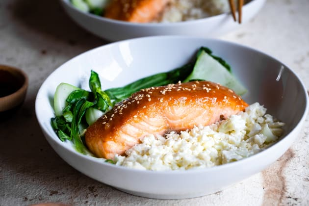

Air Fryer Miso-Glazed Salmon

Description
This recipe was inspired by the food blogger TiffyCooks! It is quick,
easy and delicious, and if you're a novice cook like me, this recipe is
perfect for you!
Prep time: 30 minutes
Cooking time: 25 minutes
Ingredients
- 2 pieces skin-on salmon
- 3 tbsp Japanese mayo
- 1.5 tbsp white miso paste
- 1 tbsp minced garlic paste
- 1 tbsp mirin
- 1 tbsp soy sauce
- Pinch of black pepper
Instructions
- Combine all the marinade ingredients listed above.
-
Place the salmon skin-side down in a bowl/container and coat the
salmon with the marinade.
-
Marinate the salmon for at least 30 minutes (ideally overnight).
- Place the salmon skin-side down in the air fryer.
- Air fry at 205oC for 20 minutes.
-
Serve over a bed of rice with some steamed bok choy and you have
yourself a delicious meal!
Comments, feedback or recipe suggestions!